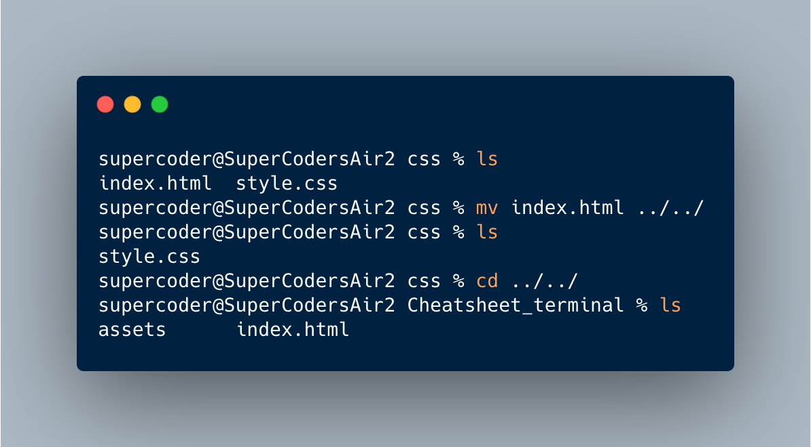
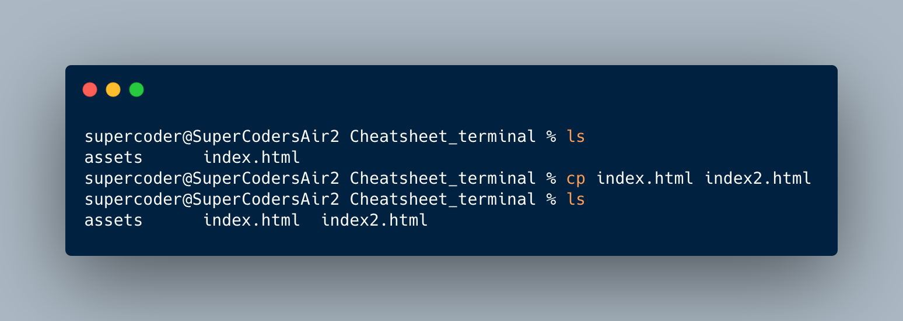

Repository: A container that includes all files and folders of your project
Commit: A point that you have saved your projects progress. Every commit receives a new ID and can be reverted to later
Head: The commit your are currently viewing/modifying
Branch: A side section of a project where new things can be tested without affecting the main project. Kind of like a repository inside a repository. Can be merged to the main branch of the project later to include changes
Master Branch: The main branch of the project. This will be what you publish when you are finished
Info: All commands are prefaced with "git" and usually used inside the VScode terminal
init:
Initiates new local repository for project
status:
Shows if all your progress has been added/commited and gives an overall update on the status of your work
add:
Adds(tracks) your progress to your repository. Tipp: "add ." adds all changes to your repository. Specific files can be added by using "add <file>"
commit -m "message":
Creates a new commit so save your changes to the repository. A message can be left between the " "
diff
Shows the changes you have made since your last commit
log
Shows the history of your commits
log --oneline
Shows the log in a more compact format. --decoreate can be used after to highlight more things
mv
Moves file to specified folder. Warning: If folder does not exist file will be renamed and moved to last specified existing folder!

cp
Copies file to specified directory. Giving a new filename instead of a directory copies file in same folder with new name Warning: If specified folder does not exist file will be renamed and copied to last specified existing folder!

man
Opens manual for specified command. Gives additional info and variatons of specified command